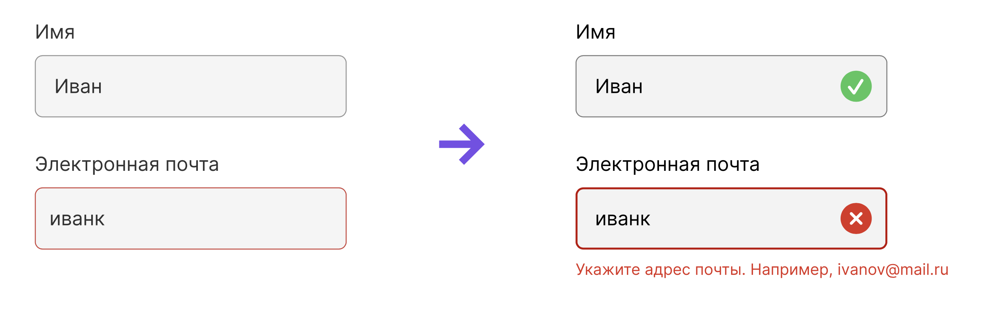
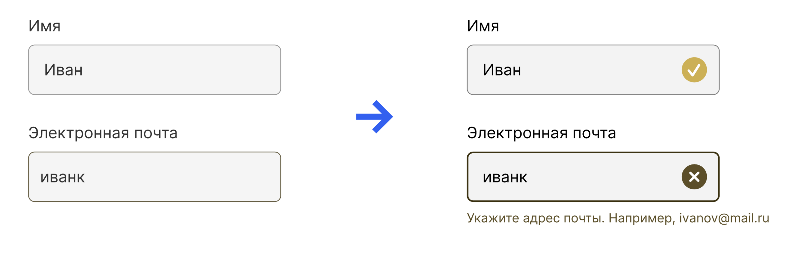
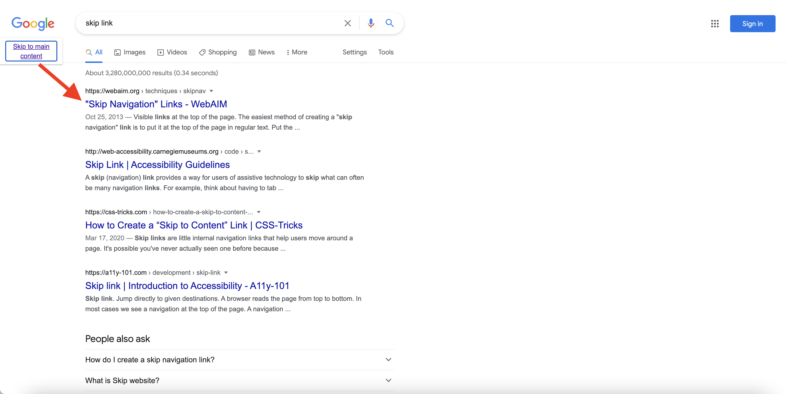

С чего начать?
c чего начать?
Accessibility is the practice of making your websites usable by as many people as possible . We traditionally think of this as being about people with disabilities, but the practice of making sites accessible also benefits other groups such as those using mobile devices, or those with slow network connections.developer.mozilla.org
Люди должны иметь возможность воспринимать контент тем способом, который им доступен.
Люди должны иметь возможность взаимодействовать с интерфейсом и управлять контентом тем способом, который им доступен.
Контент и интерфейс должны быть понятны всем людям, в том числе и с инвалидностью.
Интерфейс должен оставаться доступным при изменении версий продукта или операционной системы.
Выполнены критерии Level A (30шт.)
Без выполнения критериев существуют барьеры, которые ассистивные технологии не могут преодолеть. Влияет на самую широкую часть аудитории и является существенно важным.
Выполнены все критерии Level A + Level AA (20шт.)
Всего: 50шт.
Уровень, требуемый законом. При выполнении всех критериев всё ещё могут оставаться некоторые барьеры, но большинству ассистивных технологий контент будет доступен.
Выполнены все критерии Level A, Level AA + Level AAA (28шт.)
Всего: 78шт.
Для некоторого контента невозможно достичь
всех критериев.
Не является рекомендацией. Нужен для сайтов, ориентированных на аудиторию с постоянно ограниченными возможностями.
aria-autocompletearia-checkedaria-currentaria-disabledaria-expandedaria-haspopuparia-hiddenaria-invalidaria-labelaria-levelaria-multilinearia-multiselectablearia-orientationaria-pressedaria-readonlyaria-requiredaria-selectedaria-sortaria-valuemaxaria-valueminaria-valuenowaria-valuetext💡 1.22% - достаточная доля, чтобы думать о пользователях IE11

Inclusive Design doesn’t mean you’re designing one thing for all people. You’re designing a diversity of ways to participate so everyone has a sense of belonging
— Susan Goltsman, Inclusive Design leader
Когда учитывают потребности только среднего пользователя.


(Level A)
<html lang="en">
<head>
<title>My page</title>
<meta charset="UTF-8">
<link rel="stylesheet" href="styles.css">
</head>
Success Criterion 3.1.1 Language of Page
(Level A)
<html lang="ru">
<head>
<title>Моя страница</title>
<meta charset="UTF-8">
<link rel="stylesheet" href="styles.css">
</head>
(Level AA)
<html lang="ru">
...
<body>
<p>В воздухе витало <i lang="fr">je ne sais quoi</i>.</p>
</body>
</html>
<header>Логотип</header>
<nav>Главная навигация</nav>
<main>
<h1>Заголовок</h1>
<section>
<h2>Заголовок секции</h2>
</section>
<section>
<h2>Заголовок секции</h2>
</section>
</main>
<footer>Информация</footer>
| Плохо 🙅 | Хорошо 🙂 | Отлично! 👍 |
|---|---|---|
<div id="header"> |
<div role="banner"> |
<header> |
<div id="navigation"> |
<div role="navigation"> |
<nav> |
<div id="main"> |
<div role="main"> |
<main> |
<div id="section"> |
<div role="region"> |
<section> |
<div id="sideinfo"> |
<div role="complementary"> |
<aside> |
<div id="footer"> |
<div role="contentinfo"> |
<footer> |
(Level AAA)
<h1>Фронтенд-программист</h1>
<section>
<h2>Учебная программа</h2>
<article>
<h3>Вёрстка</h3>
<article>
<h3>JavaScript</h3>
Success Criterion 2.4.10 Section Headings
:focus {
outline: none;
}
:focus {
box-shadow: 0 0 0 2px #fff,
0 0 0 4px var(--c-electric-blue-master);
}
:focus-visible {
box-shadow: 0 0 0 2px #fff,
0 0 0 4px var(--c-electric-blue-master);
}
(Level AAA)
Success Criterion 2.5.5 Target Size(Level A)
 Success Criterion 1.4.1 Use of Color(Level A)
 Success Criterion 1.4.1 Use of Color(Level A)
 Success Criterion 2.4.1 Bypass Blocks
<a class="skip-link"
href="#main">
Перейти к основному контенту
</a>
.skip-link {
transform: translateY(-200px);
transition: transform 0.2s;
}
.skip-link:focus {
transform: translateY(0%);
}
Невозможно стать самой крутой дизайн компанией, как например OXO, думая только о среднем пользователе.
Только тогда, когда ваш нож одинаково крут и для человека с артритом, и для шеф-повара, вы завоюете весь рынок.
Только тогда, когда вашим устройством одинаково желает пользоваться и зрячий, и незрячий, вы – компания Apple.
— Валерия Курмак
Когда учитывают потребности только среднего пользователя.Сила Интернета заключается в его универсальности. Всеобщая доступность, невзирая на ограничения здоровья, является непременным его условием.
– Tim Berners-Lee, директор W3C и создатель Всемирной паутины
“Not being disabled is temporary“—Wise words from @sonniesedge at #Fronteers pic.twitter.com/jaJ0JUbujx
— Char💉s (@charis) October 3, 2019